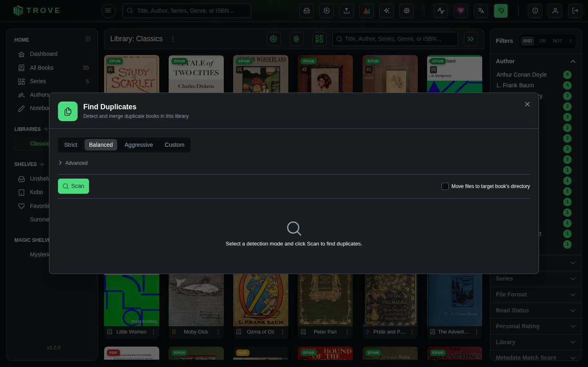

Duplicate detection
Trove can scan a library for duplicate books and merge them together. When duplicates are found, you choose which book to keep as the target and the other books' files get attached to it as alternative formats. This is useful when you have the same book in multiple formats (EPUB and PDF, for example) or accidentally imported it twice.
Opening the Duplicate Finder
Open the library, click the ⋮ beside its name, and choose Find Duplicates.

This opens the Find Duplicates dialog, scoped to that library.
Detection Modes
Before scanning, choose how aggressively Trove should look for duplicates. Four presets are available, or you can configure individual signals manually.

Presets
| Preset | Matches By | Best For |
|---|---|---|
| Strict | ISBN, External ID | High-confidence matches only |
| Balanced | ISBN, External ID, Title + Author | General use (default) |
| Aggressive | All 5 signals | Catching every possible duplicate |
| Custom | Your choice | Fine-tuned control |
Detection Signals
Expand the Advanced section to see and toggle individual detection signals:
| Signal | How It Works |
|---|---|
| ISBN | Matches books sharing the same ISBN-13. Automatically converts ISBN-10 to ISBN-13 for comparison. |
| External ID | Matches books that share an identifier from Goodreads, Hardcover, Google Books, ASIN, Audible, or ComicVine. Uses a union-find algorithm, so if Book A and Book B share a Goodreads ID, and Book B and Book C share an Audible ID, all three are grouped together. |
| Title + Author | Matches books with the same normalized title whose authors overlap. Title normalization strips whitespace and casing differences. Author comparison checks for name overlap between the two books. |
| Same Directory | Matches books whose files live in the same directory within the library. |
| Filename | Matches books whose filenames are similar after normalization (lowercased, underscores/hyphens replaced with spaces, special characters removed). |
Scanning for Duplicates
Click Scan to run the detection. Trove checks every book in the library against the enabled signals and groups duplicates together.
Results appear as numbered groups. Each group contains two or more books that Trove believes are duplicates, along with a colored badge showing why they matched:
| Badge | Meaning |
|---|---|
| ISBN | Shared ISBN |
| External ID Match | Shared identifier from a metadata provider |
| Title + Author | Same title with overlapping authors |
| Directory | Files in the same folder |
| Filename | Similar filenames |
Each book in a group shows its cover, title, author(s), and format badge (EPUB, PDF, AZW3, etc.).
Selecting a Target
Every group has one book pre-selected as the target, indicated by the TARGET label and a highlighted row. The target is the book you want to keep. All other books in the group are "source" books whose files will be attached to the target.
Trove picks the suggested target automatically based on:
- Format priority (EPUB is preferred over PDF, etc.)
- Number of files (more files = higher priority)
- Metadata completeness
You can change the target by clicking the radio button next to any other book in the group.
Merging Duplicates
Merging a Single Group
Click Merge on a group to merge the source books into the target. What happens:
- Source books' files are moved into the target book's directory
- The files become alternative formats on the target book
- If Delete source books is checked, the source book entries are removed from your library
Merging All Groups
Click Merge All at the top right to process every group at once. A progress indicator shows how many groups have been processed. After completion, a summary shows how many merges succeeded or failed.
Dismissing a Group
Click Dismiss on any group to skip it. The group is hidden from the results but no changes are made. This is useful when Trove flags books that aren't actually duplicates.
Delete Source Books
The Delete source books checkbox (enabled by default) controls what happens to source books after a merge:
| Setting | Behavior |
|---|---|
| Checked | Source books are deleted from the library after their files are attached to the target |
| Unchecked | Source books remain in the library but lose their file associations |
What a merge keeps
Reading progress, read status, ratings, bookmarks, highlights, notes and shelf memberships on the books being merged are moved to the book you keep, for every user, so nobody loses their place.
Notes
- Duplicate detection is scoped to a single library. It does not compare books across different libraries.
- Folder-based audiobooks cannot be merged because their directory structure is integral to playback.
- File naming follows the library's configured naming pattern. If a filename conflict occurs, Trove appends a numeric suffix (e.g.,
_1,_2). - File monitoring is temporarily paused during the merge to prevent the scanner from reacting to file moves.
- Merging is not reversible. If you're unsure about a group, use Dismiss to skip it.